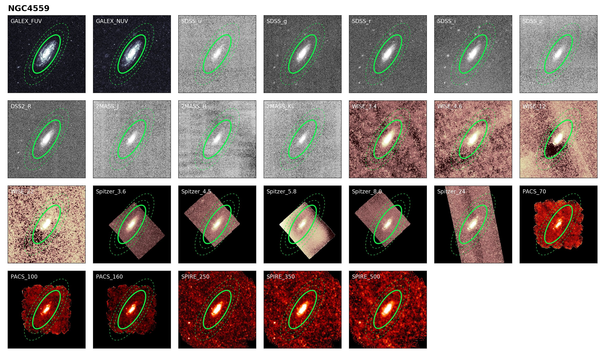

Research
My research centres on understanding the interstellar medium of galaxies — what its properties are, and what it can tell us about how galaxies have changed over the history of the Universe. I especially focus on cosmic dust, and the unique window it provides onto how galaxies have developed from clouds of basic primordial gas into evolved systems — enriched with the heavy elements that go on to form new stars and planets (and occasionally astronomers).
Multiwavelength imagery of DustPedia galaxy NGC 4459 (from Clark et al., 2017), showing the photometric apertures used by my CAAPR pipeline to measure the galaxy's flux in each of the 26 ultraviolet—submillimetre wavelengths.
In Clark et al. (2017), I describe.

Compilation of values for κd (the dust mass absorption coefficient) published 1984—2016. This shows show poorly-constrained κd is, with values spanning over 3 orders of magnitude! The new empirical value reported in Clark et al. (2016) is shown in blue.
In Clark et al. (2016), I used data from the Herschel Reference Survey to empircally determine a value for κd (the dust mass absorption coefficient), the notoriously-poorly-constrainted constant that astronomers need to work out dust masses. By taking advantage of the fact that the dust-to-metals ratio in the interstellar medium appears to be constant, I find that a value of κd at 500 μm of 0.051 (+0.070, −0.026) kg −1.

Six of the enigmatic blue and dusty gas rich galaxies revealed in Clark et al., 2015, as they appear in four different parts of the spectrum. Note their abundant star formation (in the ultraviolet, 1st row), irregular and flocculent morphologies (in the optical, 2nd row), modest populations of evolved stars (in the near-infrared, 3rd row), and dust-richness (in the submillimetre, 4th row).
For my PhD thesis (and published in Clark et al., 2015), I used Hershcel-ATLAS to create the first dust-selected volume-limited survey of nearby galaxies, providing our first unbiased view of dust in the local Universe. Unexpectedly, I found that most dusty galaxies belong to a severely under-studed population dubbed 'BADGRS' — Blue And Dusty Gas Rich Sources (examples shown above). BADGRS contain only 5% of the stars in the local Universe, but 35% of the dust, and over 50% of the atomic gas. Their dust is very cold (12—16 K), and absorbs an exceptionally small fraction of their stellar emission. BADGRS represent a fascinating intermediate stage in galaxy evolution. They’ve built up a lot of dust very quickly, and are relatively metal-rich (metallicities of 0.5—1.1 solar); however, they are still early in the process of converting their gas into stars, unlike most commonly-studied galaxies.

Resolved component separation of the Crab Nebula as it appears at 160 μm (published in Gomez et al., 2012), showing the synchrotron (left), warm dust (centre), and cool dust (right) emission. This was the first ever map of the distribution of cold dust manufactured within a supernova remnant.
I also have an active interest in evolved stars, following on from work I carried out for my PhD thesis (which was published in Gomez et al., 2012). I used Herschel data to perform a resolved component separation of the far-infrared and submillimetre emission of three SuperNova Remnants (SNRs), including the Crab Nebula. My resolved component separation for the Crab (shown above) generated the first ever map of the distribution of cold supernova dust within a SNR. This map showed the dust lies protected within the Crab's dense filaments, proving that it was manufacted by the Crab, and showing that the dust will survive to be injected into the Galactic environment — the first SNR for which this can be said.